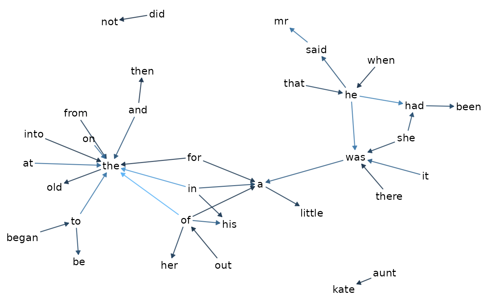
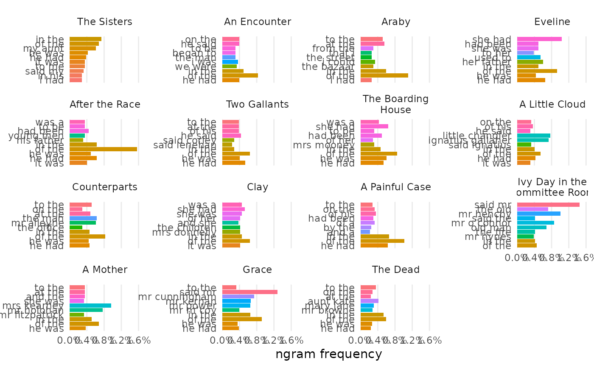
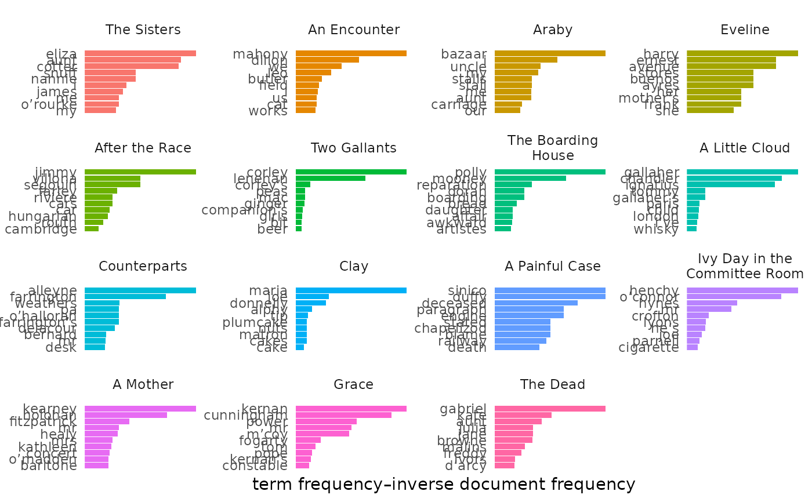
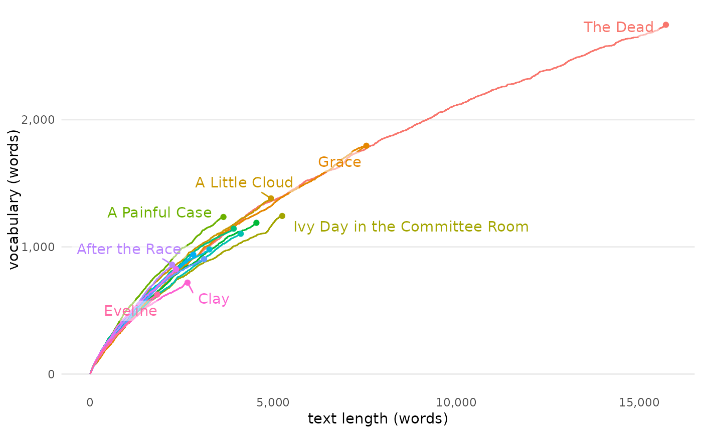
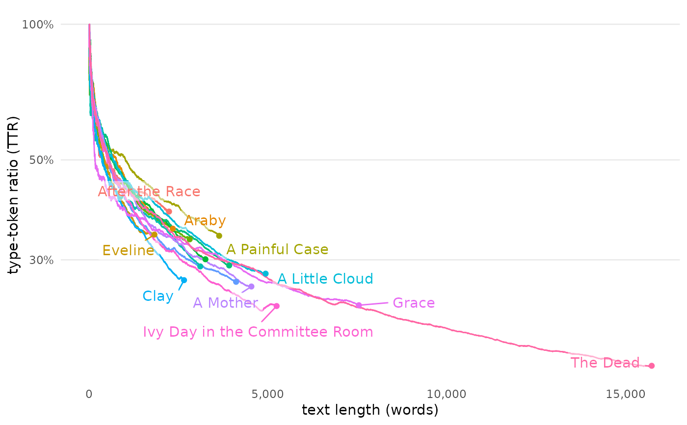
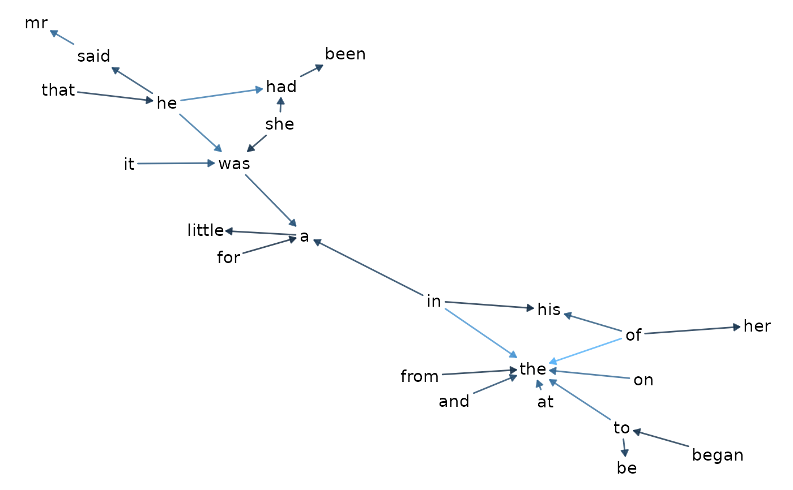
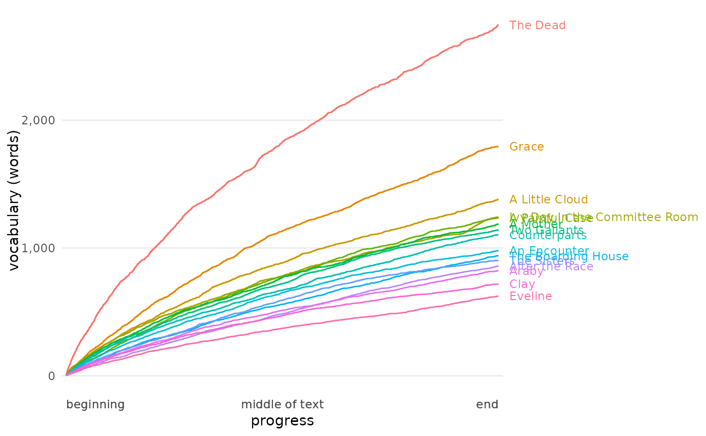

visualize() provides a simple method for displaying results. Based on previous functions used, visualize() will choose a method, resolving to one of the other visualizing helpers.
Arguments
- .data
data processed with one or more functions from
tmtyro- ...
Arguments passed on to
plot_doc_word_bars,plot_bigrams,plot_vocabulary,plot_ttr,plot_hir,plot_topic_distributions,plot_topic_bars,plot_topic_wordcloudrowsThe features to show
byThe column used for document grouping, with doc_id as the default
featureThe column to measure, as in "word" or "lemma"
inorderWhether to retain the factor order of the "by" column
reorder_yWhether to reorder the Y-values by facet
color_yWhether bars should be filled by Y-values
percentsWhether to display word frequencies as percentage instead of raw counts
labelWhether to show the value as a label with each bar
label_tweakThe numeric value by which to tweak the label, if shown. For percentages, this value adjusts the decimal-point precision. For raw counts, this value adjusts labels' offset from the bars
label_insideWhether to show the value as a label inside each bar
na_rmWhether to drop empty features
random_seedWhether to randomize the creation of the network chart.
set_seedA specific seed to use if not random
legendWhether to show a legend for the edge color
top_nThe number of pairs to visualize
identityA grouping column for lines
descriptive_labelsA toggle for disabling descriptive labels of progress_percent on the X-axis
labelingOptions for labeling groups:
"point"labels the final value"inline"prints the label within a smoothed curve"axis"prints labels where a secondary Y-axis might go"inset"prints a legend within the plot areaAnything else prints a legend to the right of the plot area.
log_yA toggle for logarithmic scaling to the Y-axis; defaults to TRUE
topicsThe topic numbers to view
Note
For some visualizations, an optional type parameter may be helpful to change the visualization. For example, setting type = "htr", type = "ttr", or type = "hapax" after add_vocabulary() will emphasize different columns added by that function. Similarly, type = "cloud" or type = "wordcloud" will show topic word clouds after make_topic_model(), and type = "heatmap" will show an alternative visualization for word frequencies.
See also
Other visualizing helpers:
change_colors(),
plot_bigrams(),
plot_doc_word_bars(),
plot_doc_word_heatmap(),
plot_hapax(),
plot_hir(),
plot_tf_idf(),
plot_topic_bars(),
plot_topic_distributions(),
plot_topic_wordcloud(),
plot_ttr(),
plot_vocabulary()
Examples
dubliners <- get_gutenberg_corpus(2814) |>
load_texts() |>
identify_by(part) |>
standardize_titles()
# A data frame with `doc_id` and `word` columns will visualize frequency by default
dubliners |>
visualize()
# Applying `tmtyro` functions will choose an appropriate visualization
dubliners |>
add_ngrams() |>
visualize()

dubliners |>
add_ngrams() |>
combine_ngrams() |>
visualize()

dubliners |>
summarize_tf_idf() |>
visualize()

dubliners |>
add_vocabulary() |>
visualize()

if (FALSE) { # sentiment requires interaction on first load
dubliners |>
add_sentiment() |>
visualize()
}
# Some visualizations are specified with the `type` argument
dubliners |>
add_vocabulary() |>
visualize(type = "ttr")

if (FALSE) { # puzzlingly broken for Dubliners, but usually works
dubliners |>
add_vocabulary() |>
visualize(type = "hapax")
}
# Other arguments get passed along
dubliners |>
add_ngrams() |>
visualize(top_n = 25)

dubliners |>
add_vocabulary() |>
visualize(x = progress_percent)
